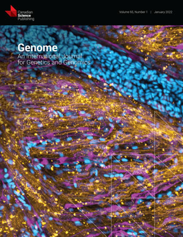
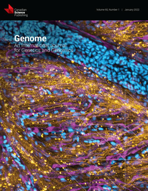

Canadian Science Publishing (Not-for-Profit)
Canadian Science Publishing (CSP) is an Ottawa-based not-for-profit scholarly publisher that provides access to their suite of scientific journals through paid and open access subscriptions.
After CSP rebranded, they needed a design solution to promote their new identity to current and potential institutions. In addition, they needed a reliable system to gather data and measure performance. The goal of this project was to research and implement a design solution that enabled marketing to promote CSP’s brand identity, track campaign performance and use that data to inform future sales and marketing decisions.
My key contributions to Canadian Science Publishing:
- Led scientific journal cover selection and production. Communication with SPEs, MEs journal editors was key in this process.
- Implemented a design & system process. This helped the team establish structure and helped Operations and Sales understand how and why the team chooses to implement certain components over others.
- Initiated usability testing of sales and marketing tools. Since no usability tests were previously conducted, we started conducting testing and used the feedback to either improve or replace our current tools.
- Implemented tools with built-in metrics. This gave the team a way to measure success and inform data-driven decisions.
- Improved brand and visual presence across all channels. There was little to no brand presence when I came on board, librarians and agents have become aware of CSP since starting promotional campaigns.
A few of the journal covers I curated:
 

When I joined CSP, there was no solution in place for marketing to measure performance metrics of sales-specific campaigns. As a result, there was no way for marketing to know if these campaigns were successful. This caused a gap between marketing and sales because marketing could not report on current and past campaigns or inform future campaigns using quantitative data. It also meant that marketing could not support sales to its fullest extent.
My research encompassed:
- Understanding the user goals and needs
- Uncovering pain points with the existing user journeys
- Methods to determine the success of the tasks measured